Lokaverkefni
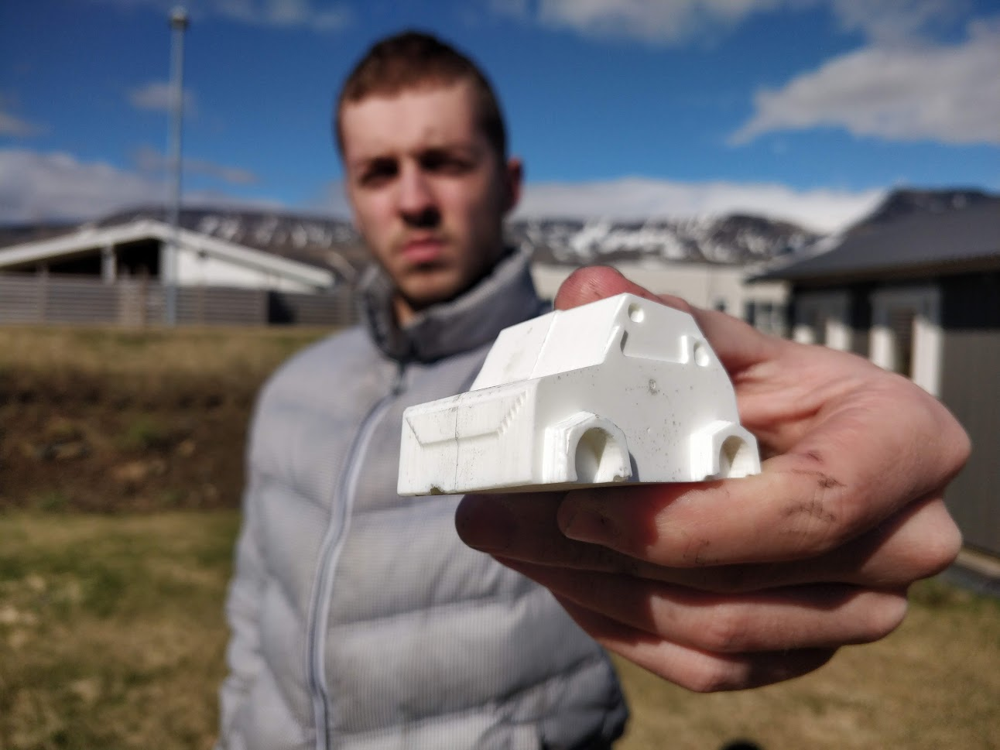
28.3.2022Sem lokaverkefni ákváðum við að fræsa mót í vax. Ég, Atli Tobiasson er rithöfundur þessarar greinar en með mér í hóp eru þeir Friðrik Valur Elíasson og Máni Sakamoto Kolbeinsson (hópur 7). Fyrsta ákvörðunin í verkefninu var að styðjast við skipulagsforritið Trello til að dreifa vinnu verkefnisins á alla og til að gefa okkur skýr markmið sem við getum unnið okkur að.Næst er það að fá góða hugmynd um hvað við ætlum að gera. Ég og Friðrik erum nú að gera hugmyndalista:
- Símahulstur
- Klakabox
- 2.5D spark bíll
- Cybertruck
- Tappi
- Einhvers konar hlutur til að setja á jólatré
- Geymslustöð fyrir síma og heyrnatól
- Módel tekið af netinu
- lyklakippa
Eftir að sofa á þessum hugmyndum ákváðum við að nota Cybertruck hugmyndina með smá breytingu. Hugmyndin okkar er að gera Cyber Beetle. Það er samblanda af Cybertruck og Bjöllu.
Fyrst fór Máni í það að hanna bílinn í Fusion. Hér er texti frá honum um það hvernig hönnunin fór fram:
29.3.2022 - 31.3.2022Þegar komið var að skissa bílinn var fyrst skoðað hönnunarmál bjöllunnar og cybertruck og hvernig þessar tvær hannanir gætu verið settar saman.

- Í appelsínugulu: hjólbogar
- Í rauðu: body línur bílsins
- Í bláu: hjólhaf
Eins og sést eru allar þessar línur til staðar í hverri endurhönnun bjöllunnar svo það er mikilvægt að draga þessar línur í hönnun bílsins.En eins og við komumst fljótt að yrði þetta alltof erfið hönnun að framleiða í móti og þessu var hent útum gluggan fyrir kassabíl sem væri raunverulega hægt að framleiða.
1.4.2022Friðrik og Máni: Teikningin fór fljótar fram þarsem bíllinn var í grunn miklu einfaldari gerð af upprunalegu hönuninni með mjög skörpum línum og einföldum prófilum sem hægt væri að búa til með móti. En að fyrstu var hönnunin of flókin með overhang og hlutum sem gerði það ómögulegt að taka bílinn úr mótinu.

Þetta var lagað fljótt og þetta var lokahönnunin.
 2.4.2022
2.4.2022
Þegar módellið var tilbúið gat Friðrik farið að fikta við mótagerðina. Þar hermdi hann að miklu leyti eftir þeim skrefum sem eru sýnd í eftirfarandi myndbandi:
Þessi myndbönd fylgdu Verkefnalýsingunni (Lokaverkefni partur 1 - Fræsing) og eru frá YouTube rásinni; Fab Lab Akureyri.
Þegar Friðrik var sáttur með sitt framlag lagðist hann aftur í leikjastólinn og starði í meistaraverkið sitt:
 4.4.2022
4.4.2022
Nú er það komið að honum Atla að gera toolpath.Hér var einnig fylgt myndböndum frá Fab Lab Akureyri:
Við notum fræsi sem er staðsettur í Fablab Breiðholti en hann notar aðeins öðruvísi bora en þeir eru notaðir á Akureyri (og í þessum myndböndum).
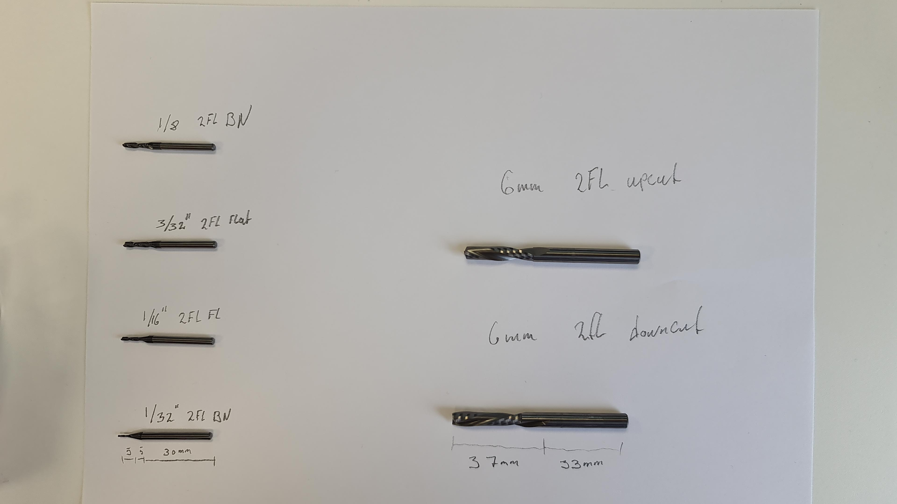
Upphaflega gerði Atli sér ekki grein fyrir þessum muni og hermdi bara eftir myndböndunum (samt með borana á myndinni í huga).Þetta var niðurstaðanMynd 1: Mesta vaxið gróflega fjarlægt
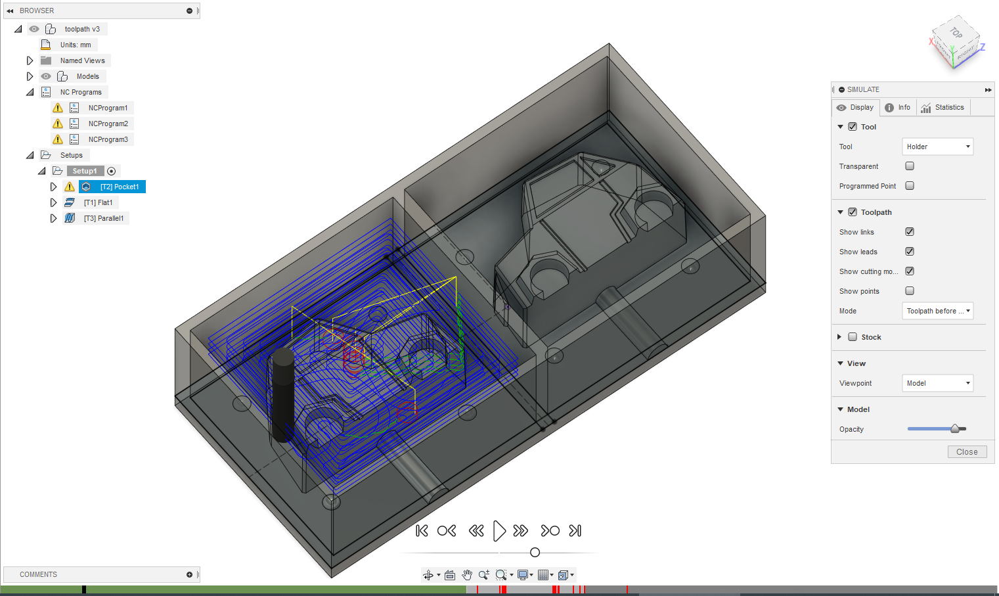
Mynd 2: Fínni bor gerir gerir fínni skurð
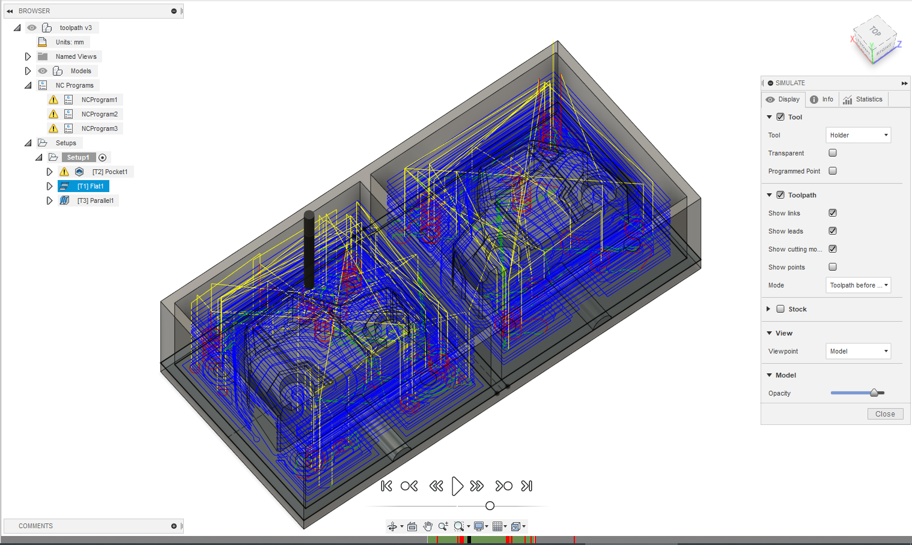
Mynd 3: Bor sem er með halla sléttir flesta grófa kanta út
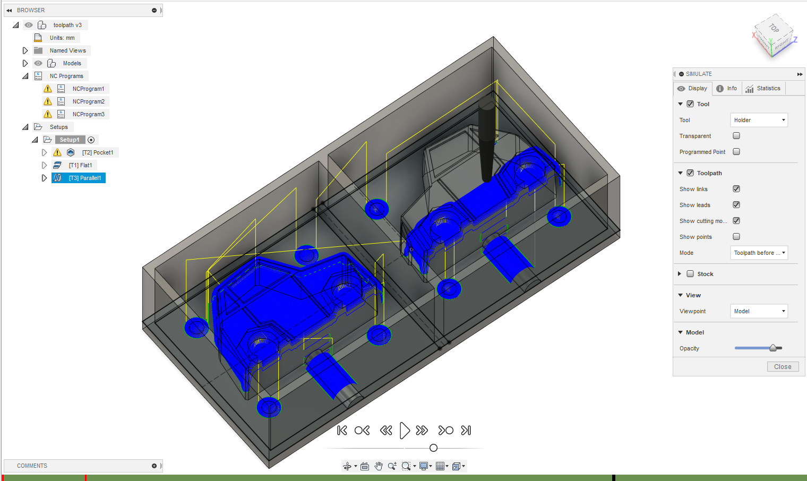
Hér eru borarnir sem Atli notaði:
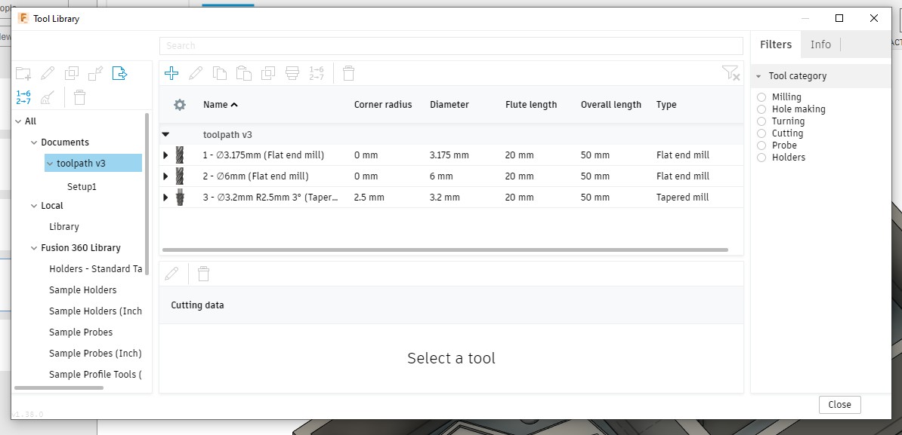
Það hvernig þeir eru stilltir kemur fram í myndböndunum uppi.En eins og kom í ljós á fræsideginum er að þessi vinna var nánast tilgangslaus 🥱.
6.4.2022 (Fræsidagur)Þegar við mættum í FabLab komumst við að því að fræsarnir voru með of einfaldan hugbúnað til þess að skilja fræsi toolpath úr fusion og þurfti því að græja toolpath uppá nýtt í forriti hjá Hafliða. Þá komumst við líka að því að 6 mm borinn sem við ætluðum að nota var bara fyrir ShopBot ekki litla fræsinn sem viðp notuðum og í staðin var stærsti borinn okkar 1/8 tomma, flat nose, 4 flute. Hafliði setti það inn í forritið og það fór að reikna nýtt Toolpath. Að setja það upp var lítið mál nema það þurfti að passa vel að snúa hlutnum rétt, hinsvegar tók um 2 tíma að reikna toolpathið.Fræsingin gekk að mestu vel, það þurfti einfaldlega að staðsetja fræsibitann í byrjun og ýta á af stað. Það var mjög ljótt hljóð í fræsinum sem kom líklegast vegna þess að fræsirinn var stilltur fyrir 2 flute en ekki 4 flute fræsibita. Á meðan fræsingin var í gangi þurfti reglulega að kíkja á fræsinn og sópa burt öllu vaxinu sem hafði losnað, því var svo safnað saman svo hægt væri að fræða það niður aftur og endurnýta. EFtir um 30 mín gerði Hafliði smá mistök við það að setja hinn fræsinn í gang fyrir annan hóp og yfirskrifaði óvart okkar, það var strax greinilegt að okkar var að gera eitthvað skrítið svo við settum hann á pásu. Þá setti Hafliði okkar bara aftur af stað með réttu toolpathi en því miður var ekki hægt að halda áfram frá þeim stað sem hann var á og var han því að fræsa loft næstu 30 mín. Það tók hann allt í allt um 3,5 tíma að fræsa mótið og hefði því tekið um 3 tíma venjulega.
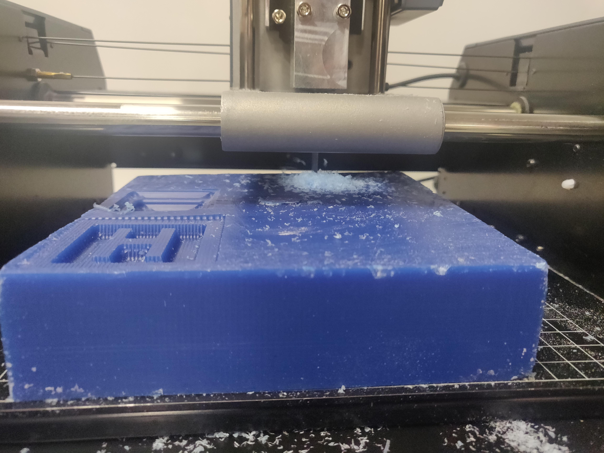
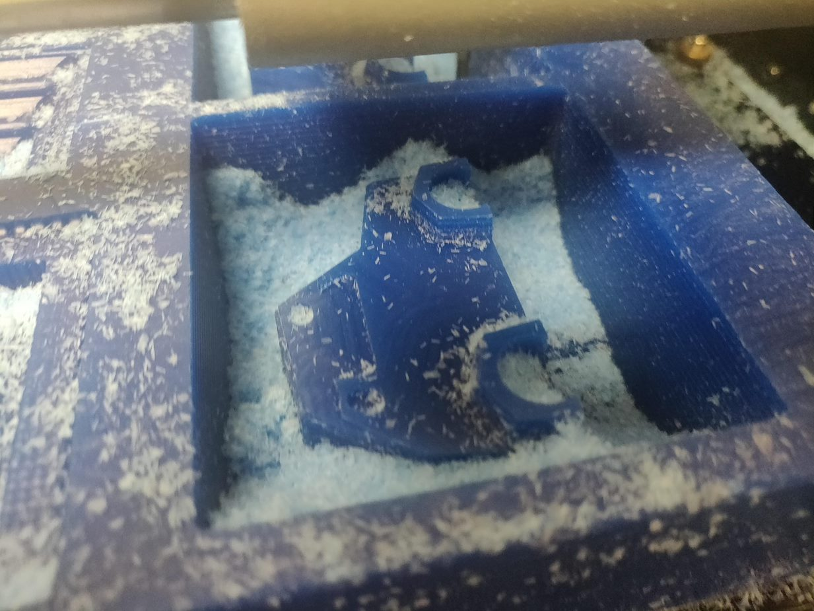
Að loknu rough cut fórum við í það að fræsa finishing cut, það voru nokrir nákvæmir hlutir á bílnum og því ákváðum við að gera það með 1/16 tommu, ball nose, 2 flute fræsi bita. Það toolpath var mun fljótlegara að reikna, bara um 10 mín. Það var hinsvegar bara búið með kannski fyrstu 5% af fræsingunni þegar kom í ljós vandamál. Til þess að hafa einhvern styrk er efri parturinn af fræsibitanum 1/8 tomma á þykkt og því þarf um 5° halla á allar hliðar sem eru hærri en um 10 mm þegar nota á þennan fræsibita í 3 ása fræsi en hliðarnar á bílnum hölluðu bara um 1° og því fór efri parturinn á fræsibitanum að rekast í mótið. Því urðum við að hætta við að framkvæma finishing cut.
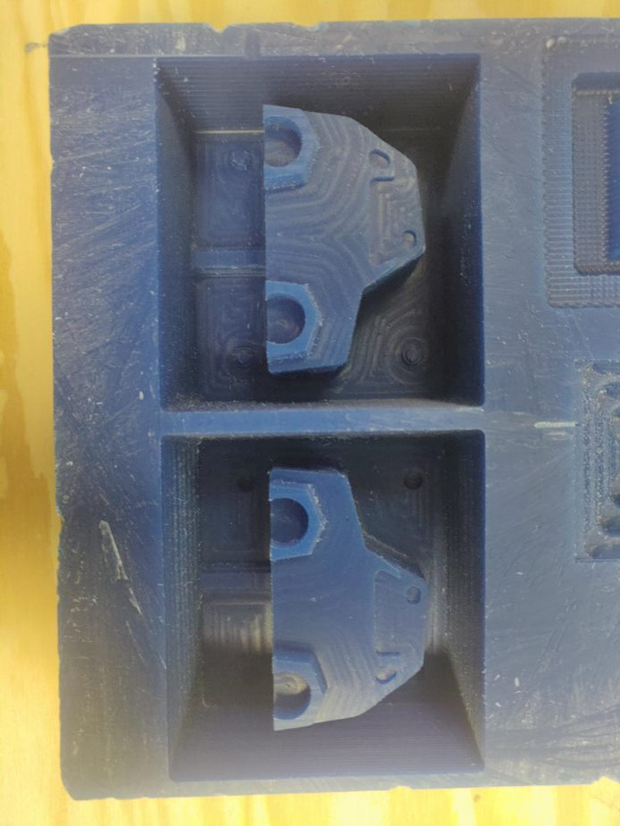
Dæmi um lítinn ball nose fræsibita:
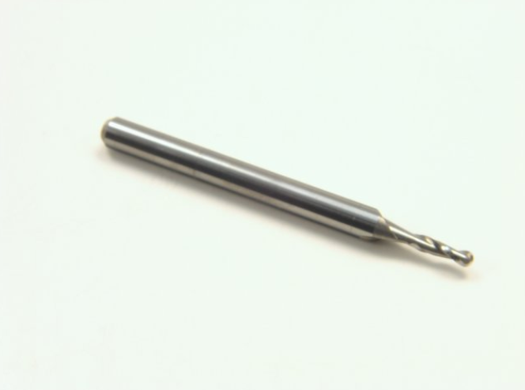
Þegar positíva mótið var orðið klárt var lítið mál að græja negatíva mótið, við einfaldlega blönduðum sílíkon eftir leiðbeiningunum á umbúðunum, hrærðum rólega í áttur til að búa ekki til óþarfa loftbólur og heltum því í positíva mótið. Síðan biðum við í 72 tíma eftir að það harðnaði. Þegar við forum svo að losa sílikonið úr mótinu vorum við mjög fegnir yfir því að hafa sett 5° draft angle á alla hliðarveggina í mótinu sem gerði það mun auðveldara að losa partana í sundur, þó þurfti enn að nota dúkahníf til þess að losa meðfram köntum og svo flataus skrúfujárn til þess að ná mótinu upp hægt og rólega. Gæti verið sniðugt í framtíðinni að fræsa eitthvað í mótið sem gerir það auðvelt að ná gripi á sílíkoninu og toga það upp.
72 tímum seinna...
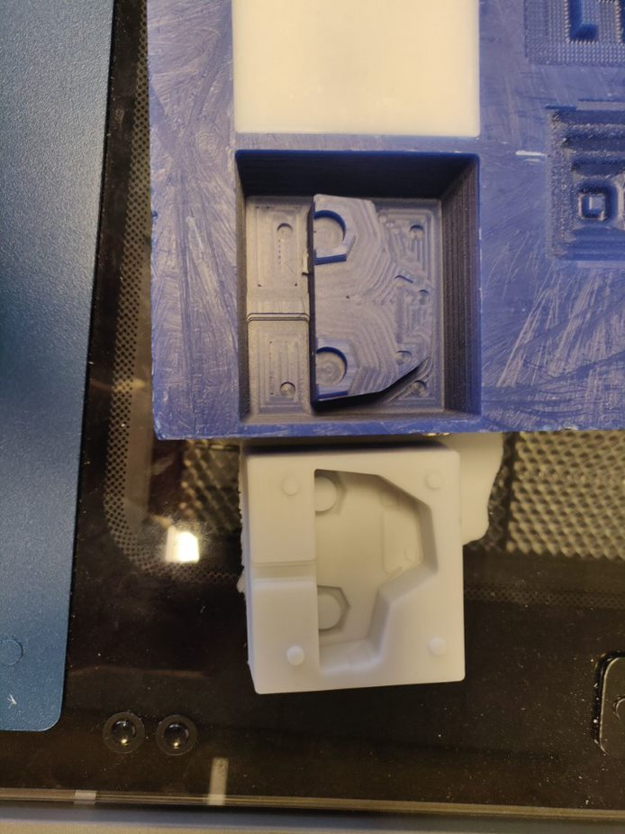
11.4.2022

This work is licensed under a Creative Commons Attribution-ShareAlike 4.0 International License.